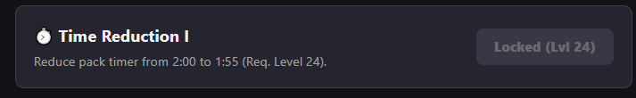
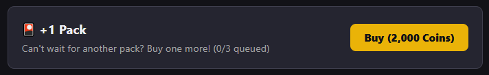
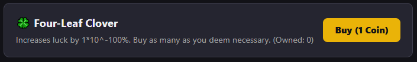

1.4
welcome to um. 1.4... we are likely nearing the end of development soon.
for now the only features i wish to add is card condition %, discord account linking (for cross device progress) formula tweaks and maybe booster packs, as well as maybe a few more shop items and like 1 more perk.
now for the changes. please note everything added in this version is not currently in the guide (as of creation of this changelog, it might be there when you are reading this...)
Added random package drops: Every 7.5-15 minutes, a package will appear on your screen for 30 seconds. Clicking on it will trigger 1 of 3 events:
Coin Bonus: Recieve +10%-30% of how many coins you currently have.
XP Bonus: Recieve 12%-36% of the required XP to reach the next level.
Pack Bonus: Recieve 1-3 packs (will not add more packs than can go in your queue, if your pack queue is full, you cannot get this bonus.)
Added the XP Progress tab and Perk Tokens. You get 1 perk token for every level you get, and you can spend them across 3 different perks, those being:
Pulling Proficiency (+2% XP per pull every upgrade) - Cost in tokens per upgrade: 1, 1, 2, 2, 4, 4, 8, 12, 16, 24, 32
Pot of Gold (+2% Coins per pull every upgrade) - Cost in tokens per upgrade: 1, 2, 2, 2, 4, 4, 8, 10, 12, 18, 22, 26, 32
Package Frequency (Package Drops become 2% more common per upgrade) - Cost in tokens per upgrade: 2, 2, 4, 4, 8, 12, 12, 12, 12
You must be level 317 to max out every single perk. Speaking of levels, the XP/Level equation has been changed from [y=100*1.06^(x-1)] to [y=100*1.048^(x-1)] (expect your level to go UP)
also changed Time Reduction V level requirement from 56 to 54 and Time Reduction VI level requirement from 78 to 68
Changed +1 Pack from Shop cost from 2000 coins to 1200.
Thats it for this update, we nearing the end, have fun pulling cards. About ~64% of the cards have been pulled already
1.3.1
dude im so tired its 2:10AM, we are hitting the hay after this...
Added Time Reduction Upgrades to the shop. They are the first upgrade (besides the entire shop itself) that is locked behind a level requirement
Each upgrade cuts 5 seconds off the time it takes to queue up another pack.

The Cost of each upgrade and their required level are:
Time Reduction I - 10000 (Req. Level 24)
Time Reduction II - 15000 (Req. Level 30)
Time Reduction III - 20000 (Req. Level 36)
Time Reduction IV - 30000 (Req. Level 42)
Time Reduction V - 50000 (Req. Level 56)
Time Reduction VI - 80000 (Req. Level 78)
Added the option to buy additional packs. If you have some spare change to blow, you can buy an additional pack. If your pack queue is full, you cant buy a pack.

Added four leaf clovers. You can buy as many as they want, they are 1 coin each. They "increase your luck" by 1*10^-100%.

Fixed a bug where Shiny Legendary and Shiny Special cards give 0 XP
Added the Guide
You know the drill, any ideas or want something added yadda yadda, lemme know!!!! ! ! !11
1.3
welcome to 1.3, theres like 1 new thing lolw
Added the shop. You have to be level 15 (~2000xp) to access it. Currently theres only 1 upgrade, that being how many packs you can queue up (upgrade goes up to 10
and more upgrades will be added in 1.3.1)
In addition to this, the default amount of packs you can queue has changed from 5 to 3. (it costs 3000 coins to get back to 5) If you had 4 or 5 packs queued up before the
update, you will still be able to open them.
also made shiny cards and foil cards ever so slightly rarer and microadjusted the change of getting a special card.
if you have any ideas for next update (1.3.1), whether that be a QoL feature or a shop item (or once more, if you want someone added as a card) lmk
1.2
Added Collection Tab and Favoriting
Added levels, the formula for xp relative to level is [y=100*1.06^(x-1)] (where x represents your level and y represents your new level)
Added 7 new cards and made Special cards less rare (they were 1 in 20000 :nails:) as a result, the odds of getting a common and uncommon card are very very slightly different
Fixed a bug where some common cards were more common than others
Update was pretty vibecoded, sorry, I'd like to have the idea exist rather than working for 600 hours to not be able to do it properly.
The CSS is all handwritten, and gemini helps me with HTML and Javascript
Stay tuned for next update, itll be the shop (and maybe level rewards)
If you want a feature to be added, or a person to be added as a card, message me on discord @njyujin and we will see.
also kiwi's card seems to be bugged. Its supposed to be mythic. Technically if you pull it thats a "mythic" (in spirit) however it still
has the same drop rate as a legendary. So if you get a legendary kiwi on accident, thats not a "true mythic" but you can consider it a mythic if you want.
the only milestones left for the game are a true mythic, a special card and 3 of the same card in 1 pull.
1.1.1
Added XP
Added New "Special" Rarity
You can now click on a card to pull it up and look at it. Wow!
1.1
Added pack queueing (up to 5 packs)
Added coins (no use yet)
Added Changelog
1.0
release